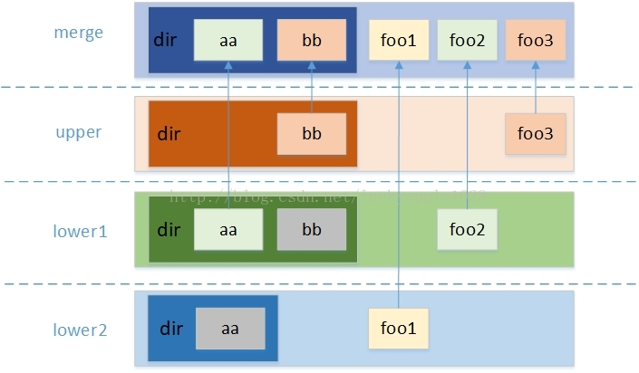

Docer镜像原理-overlayfs
Docker镜像原理-OverlayFS
Docker之所以流行的一个原因就是它发明了“层”的概念，一个镜像是由很多个层组成的。试想如果没有层，当我们要修改一个基础镜像时，就要重新打包一个基础镜像，打包之后的镜像和修改之前的镜像之间就没有了联系。当时间长了之后，会有越来越多这样的镜像，他们之间毫无联系。而当有了层的概念后，我们修改镜像时只需要在最上层对数据进行修改，屏蔽底层的原数据。这样修改后的镜像都是以基础镜像为基础的。
实现这种层会使用一种叫做联合文件系统，比如：OverlayFS、AUFS和zfs等，OverlayFS要更快、更简单。docker现在是推荐使用OverlayFS，对应的驱动推荐overlay2。每个驱动都有相应的宿主机文件系统要求：
| Storage driver | Supported backing filesystems |
|---|---|
overlay2, overlay |
xfs with ftype=1, ext4 |
aufs |
xfs, ext4 |
devicemapper |
direct-lvm |
btrfs |
btrfs |
zfs |
zfs |
vfs |
any filesystem |
可以通过docker info查看使用的驱动是什么
[root@VM-0-16-centos ~]# docker info
Client:
Debug Mode: false
Server:
Containers: 5
Running: 0
Paused: 0
Stopped: 5
Images: 1
Server Version: 19.03.13
Storage Driver: overlay2
Backing Filesystem: extfs
Supports d_type: true
Native Overlay Diff: true
OverlayFS
OverlayFS是要基于其他文件系统，并不实际参与磁盘划分，仅仅是对源文件目录的合并和隐藏，然后最终展现给用户，这就是联合挂载技术。
OverlayFS实现基于三个目录：lower、upper、work和merge目录，具体的工作方式如下：

从图中看到，最后合并后的文件会统一在merge层展示，在lower和upper中会存在文件覆盖，但这其实不是真的覆盖，而是优先展示上层的文件
mount挂载一个OverlayFS系统
mount -t overlay overlay -o lowerdir=lower1:lower2:lower3,upperdir=upper,workdir=work mergedlowerdir：指定挂载的lower层目录，可以挂载多个，通过:分隔，在这里例子中优先级：lower1 > lower2 > lower3lowerdir：指定挂载的upper层目录，在该层负责对lower层目录的读写复制workdir：指定文件系统的工作基础目录，在使用过程中对用户不可见
下面实际操作下
[root@VM-0-16-centos oo]# mkdir -p low1 low2 upper work merged
[root@VM-0-16-centos oo]# echo "low1" > ./low1/a
[root@VM-0-16-centos oo]# echo "low1" > ./low1/b
[root@VM-0-16-centos oo]# echo "low2" > ./low2/a
[root@VM-0-16-centos oo]# tree
.
├── low1
│ ├── a
│ └── b
├── low2
│ └── a
├── merged
├── upper
└── work
5 directories, 3 files
[root@VM-0-16-centos oo]# mount -t overlay overlay -o lowerdir=low1:low2,upperdir=upper,workdir=work merged
[root@VM-0-16-centos oo]# tree
.
├── low1
│ ├── a
│ └── b
├── low2
│ └── a
├── merged
│ ├── a
│ └── b
├── upper
└── work
└── work
6 directories, 5 files
[root@VM-0-16-centos oo]# cat merged/a
low1
[root@VM-0-16-centos oo]# cat merged/b
low1在lower层中的文件都合并到了merged文件夹中，因为low1的优先级高于low2，所以在merged文件夹中都显示的是low1中的文件
可以通过mount命令查看挂载情况
[root@VM-0-16-centos oo]# mount -l | grep overlay
overlay on /tmp/oo/merged type overlay (rw,relatime,lowerdir=low1:low2,upperdir=upper,workdir=work)OverlayFS的特性和限制
- 可以不指定upperdir和workdir，同时保证lowder>=2，此时为只读挂载（实现只读挂载的唯一方式）。
- upperdir和workdir必须是可写的，而且不能是父子关系
- pperdir所在的文件不能是
gfs、nfs这种远程文件系统，而lowdir因为是只读的，所以没有这种限制 - 用户指定的lowdir最多可支持500层
删除文件
删除只存在于upperdir的文件
这种情况比较简单，因为在upperdir中是可写的，所以直接删除
删除的文件存在于lowerdir层，upperdir中不存在覆盖文件
由于lowerdir是可读的，所以采用了without文件，就是当删除时，会创建一个月删除文件同名的without文件，在merge层执行ls时会自动过滤掉与without同名的lowerdir文件，利用障眼法进行了“删除”，实际上lowerdir中的文件并没有删除。without文件并非一个普通文件，它的主次设备号都为0，可以通过mknod xx c 0 0手动创建一个without文件
[root@VM-0-16-centos oo]# rm merged/a
[root@VM-0-16-centos oo]# cd upper/; ls -l
total 0
# a 文件为 without 文件
c--------- 1 root root 0, 0 Nov 30 22:59 a
# lowerdir中的原文件并没有删除
[root@VM-0-16-centos oo]# cat low1/a
low1删除的文件是upperdir覆盖lowerdir的
这种情况就是上述两种方式的结合，首先会删除upper中的文件，在创建和lowerdir中同名的without文件。
创建文件
创建一个全新的文件
新创建的文件在lowerdir和upperdir都没有同名的文件，则直接在upperdir创建
创建一个在lowerdir中有，但是在upperdir中有without同名文件
这种情况会先删除upperdir中的without同名文件，然后在uppperdir中创建新的文件
创建一个在lowerdir中有，但是在upperdir中有without同名的目录
这种与上面的情况不同的是，文件变成了目录，如果按照上述的方式，新建一个目录覆盖同名的without目录，由于上下层合并的原因，这样就会使lowerdir中的文件显示出来。OverlayFS引入了一种属性：Opaque，它是通过在upper层对应的目录上设置”trusted.overlay.opaque”扩展属性值为”y”来实现
修改文件
修改文件最主要的就是copy_up（写时复制）特性，就是当修改lowerdir中的文件或者目录时，由于lowerdir是只读的所以就会触发copy_up，会先将lowerdir中的文件拷贝出来一份，然后在拷贝出来的文件上进行修改。如果修改uppperdir中的文件，则会直接修改并不触发copy_up特性
原子性保证
之前都没有介绍到workdir目录，这个目录主要的作用就是进行一些中间操作，比如原子性就是在这个文件夹中保证的，比如在删除一个uppperdir覆盖了lowerdir的文件时，怎样防止在删除了upperdir中的文件，而没有创建同名的without文件呢？这就是workdir的作用了。在删除文件时，首先会在workdir目录中创建一个同名的without文件，然后在与uppperdir中的文件进行rename操作，操作成功之后在删除workdir中的without文件
OverlayFs在docker中的应用
[root@VM-0-16-centos overlay2]# docker images
REPOSITORY TAG IMAGE ID CREATED SIZE
ubuntu 18.04 56def654ec22 2 months ago 63.2MB
[root@VM-0-16-centos overlay2]# docker inspect 56def654ec22
"GraphDriver": {
"Data": {
"LowerDir": "/var/lib/docker/overlay2/a63fdd66f58791c3f414b63208267b2476d001633c93ccc371ffe960437a7577/diff:/var/lib/docker/overlay2/4c3fed8b54b91f7608ab666ab126ed36481aa97b091b1a51f80692810fe61a67/diff",
"MergedDir": "/var/lib/docker/overlay2/11648f0c30e578e7e8836708e6723ebf528d13425327b710ef1d06d18ff83371/merged",
"UpperDir": "/var/lib/docker/overlay2/11648f0c30e578e7e8836708e6723ebf528d13425327b710ef1d06d18ff83371/diff",
"WorkDir": "/var/lib/docker/overlay2/11648f0c30e578e7e8836708e6723ebf528d13425327b710ef1d06d18ff83371/work"
},
"Name": "overlay2"
},我们使用docker inspect命令就可以查看到该镜像对应各个目录
docker会将拉取到的文件存放在/var/lib/docker/overlay2目录下
[root@VM-0-16-centos overlay2]# pwd
/var/lib/docker/overlay2
[root@VM-0-16-centos overlay2]# ls
11648f0c30e578e7e8836708e6723ebf528d13425327b710ef1d06d18ff83371
1f8f36ae9c74e96a6a97b54173cd79746638a6ecc7d19c4805af8a5c5587a8bd
1f8f36ae9c74e96a6a97b54173cd79746638a6ecc7d19c4805af8a5c5587a8bd-init
4c0e4ced5e0bbc00799b7a5e5d959a5e3a3b977020e26389be4d2fd6ff30b9ca
4c0e4ced5e0bbc00799b7a5e5d959a5e3a3b977020e26389be4d2fd6ff30b9ca-init
4c3fed8b54b91f7608ab666ab126ed36481aa97b091b1a51f80692810fe61a67
5727168d99cd3519bce44e1d7c088f09070bc3f3eceb577dce55a7db494a3d34
5727168d99cd3519bce44e1d7c088f09070bc3f3eceb577dce55a7db494a3d34-init
583c41e944e3295f9381029c747e82c7ac84d9ae1a87858b0117313445cdda4f
583c41e944e3295f9381029c747e82c7ac84d9ae1a87858b0117313445cdda4f-init
a63fdd66f58791c3f414b63208267b2476d001633c93ccc371ffe960437a7577
fab2db742104dd81cac5320de2fc48ef84aec258f3ab883bb1ab311482e2adfa
fab2db742104dd81cac5320de2fc48ef84aec258f3ab883bb1ab311482e2adfa-init这就是最原始的镜像文件，我们在查看l目录，它里面都是硬链接
[root@VM-0-16-centos overlay2]# ls -li l
total 52
32831 lrwxrwxrwx 1 root root 72 Nov 19 14:35 3R56BVMBIF225OGKEMAQIFUVUZ -> ../11648f0c30e578e7e8836708e6723ebf528d13425327b710ef1d06d18ff83371/diff
34993 lrwxrwxrwx 1 root root 72 Nov 21 20:56 67HAUO6BXOTJHXOSC6ICAFVHPY -> ../fab2db742104dd81cac5320de2fc48ef84aec258f3ab883bb1ab311482e2adfa/diff
34997 lrwxrwxrwx 1 root root 72 Nov 21 20:57 FDGIZNQ3EKOPQKJANNK6GH4OIZ -> ../5727168d99cd3519bce44e1d7c088f09070bc3f3eceb577dce55a7db494a3d34/diff
34994 lrwxrwxrwx 1 root root 77 Nov 21 20:57 GCU24DFW64JCDH3RTJRTQA56SF -> ../5727168d99cd3519bce44e1d7c088f09070bc3f3eceb577dce55a7db494a3d34-init/diff
34990 lrwxrwxrwx 1 root root 72 Nov 19 14:35 GHRFXFKUOD3FX6JHQEVP73DO4B -> ../a63fdd66f58791c3f414b63208267b2476d001633c93ccc371ffe960437a7577/diff
32769 lrwxrwxrwx 1 root root 77 Nov 21 21:12 IHMBLFPSCBWMRH2TOE5DN5JR6H -> ../1f8f36ae9c74e96a6a97b54173cd79746638a6ecc7d19c4805af8a5c5587a8bd-init/diff
34996 lrwxrwxrwx 1 root root 72 Nov 19 14:59 JELF2EVIM5Z6YEU5PRDKGGPIDR -> ../4c0e4ced5e0bbc00799b7a5e5d959a5e3a3b977020e26389be4d2fd6ff30b9ca/diff
32773 lrwxrwxrwx 1 root root 72 Nov 21 21:12 N6NNKJ6WNRXZTTXMMOMU4H7DNZ -> ../1f8f36ae9c74e96a6a97b54173cd79746638a6ecc7d19c4805af8a5c5587a8bd/diff
34998 lrwxrwxrwx 1 root root 77 Nov 22 23:27 QBFJRGTIVSX4J5FFW2ELZXD732 -> ../583c41e944e3295f9381029c747e82c7ac84d9ae1a87858b0117313445cdda4f-init/diff
34992 lrwxrwxrwx 1 root root 77 Nov 21 20:56 RWKSWEW3BV22DU3GK4JL3XJIQZ -> ../fab2db742104dd81cac5320de2fc48ef84aec258f3ab883bb1ab311482e2adfa-init/diff
32835 lrwxrwxrwx 1 root root 72 Nov 19 14:35 SPZRGHFYA5BWO3HWZG37NZNMHQ -> ../4c3fed8b54b91f7608ab666ab126ed36481aa97b091b1a51f80692810fe61a67/diff
34999 lrwxrwxrwx 1 root root 72 Nov 22 23:27 T3JTRBFZIMJFZ2X3BFHNQILFEF -> ../583c41e944e3295f9381029c747e82c7ac84d9ae1a87858b0117313445cdda4f/diff
34995 lrwxrwxrwx 1 root root 77 Nov 19 14:59 YA5XAAG2B26GQXUWU6SI3MUYZM -> ../4c0e4ced5e0bbc00799b7a5e5d959a5e3a3b977020e26389be4d2fd6ff30b9ca-init/diff进入到docker inspect中的镜像目录，就可以在lower目录中查看到这些硬链接，他和docker inspect中查看到的Lowerdir是对应的
[root@VM-0-16-centos overlay2]# cd 11648f0c30e578e7e8836708e6723ebf528d13425327b710ef1d06d18ff83371/
[root@VM-0-16-centos 11648f0c30e578e7e8836708e6723ebf528d13425327b710ef1d06d18ff83371]# ls
committed diff link lower work
[root@VM-0-16-centos 11648f0c30e578e7e8836708e6723ebf528d13425327b710ef1d06d18ff83371]# cat lower
l/GHRFXFKUOD3FX6JHQEVP73DO4B:l/SPZRGHFYA5BWO3HWZG37NZNMHQ当运行一个容器时也可以利用docker inspect查看容器运行时的文件挂载情况
"GraphDriver": {
"Data": {
"LowerDir": "/var/lib/docker/overlay2/2a3171e9238eb75cd2831f59eab7b43f61de7d09674aae0a01f4072da86b3aeb-init/diff:/var/lib/docker/overlay2/11648f0c30e578e7e8836708e6723ebf528d13425327b710ef1d06d18ff83371/diff:/var/lib/docker/overlay2/a63fdd66f58791c3f414b63208267b2476d001633c93ccc371ffe960437a7577/diff:/var/lib/docker/overlay2/4c3fed8b54b91f7608ab666ab126ed36481aa97b091b1a51f80692810fe61a67/diff",
"MergedDir": "/var/lib/docker/overlay2/2a3171e9238eb75cd2831f59eab7b43f61de7d09674aae0a01f4072da86b3aeb/merged",
"UpperDir": "/var/lib/docker/overlay2/2a3171e9238eb75cd2831f59eab7b43f61de7d09674aae0a01f4072da86b3aeb/diff",
"WorkDir": "/var/lib/docker/overlay2/2a3171e9238eb75cd2831f59eab7b43f61de7d09674aae0a01f4072da86b3aeb/work"
},
"Name": "overlay2"
},在容器中的文件其实都是这些文件联合挂载的结果，同样在容器中修改文件也会按照之前OverlayFS的方式同样的体现在这些文件中


%E6%8E%88%E6%9D%83%E7%B1%BB%E5%9E%8B%2Fthumbnail.png)

%E5%AE%9E%E7%8E%B0%E7%AE%80%E5%8D%95%E7%9A%84OAuth2.0%E6%B5%81%E7%A8%8B%2Fthumbnail.png)
%E6%A6%82%E8%BF%B0%2Fthumbnail.png)